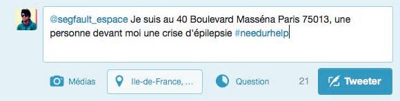

NEEDURHELP

Durant une situation de crise, les services téléphoniques sont souvent saturés et les compagnies de secours sont difficiles à contacter.
Les personnes ont donc recours aux plates-formes de réseaux sociaux pour contacter leurs proches.
Dorénavant s’ils se retrouvent dans cette situation, NEEDURHELP intervient. Il suffit de tweeter une courte descrition du problème avec le hashtag #needurhelp afin de faire venir une personne ayant les capacité pour aider la personnes dans le besoin.
Voici un tweet type:

Notre plateforme web, récupère le tweet et envoie les informations relatives à la personne dans le besoin à un profil qui correspond à la demande. La personne en détresse reçoit aussi les coordonnées de la personne qui lui vient en aide.
Durant la crise du 13 Novembre à Paris, nous avons observé une augmentation de l’aide entre les citoyens (#PortesOuvertes sur Twitter, les citoyens annoncer qu’ils pouvaient accueillir chez eux les personnes en danger).
Et l’utilisation des réseaux sociaux ont fait avancer la résolution de la crise:
-L’indice de Sécurité de facebook
-Les tweets des otages du bataclan
DANS UN MONDE OU LES RESEAUX SOCIAUX REUNIT LE GENS.
NEEDURHELP SAUVE DES VIES QUAND LES SECOURS NE LE PEUVENT PAS.